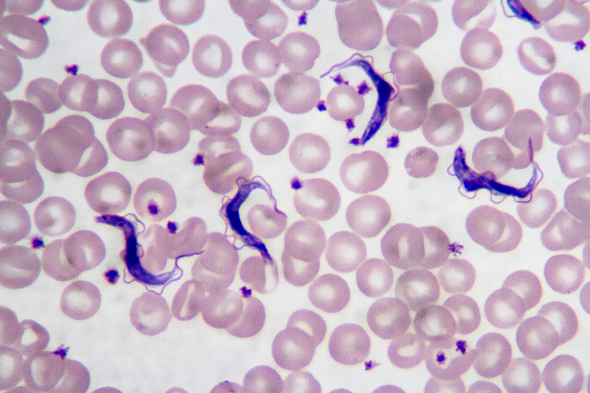
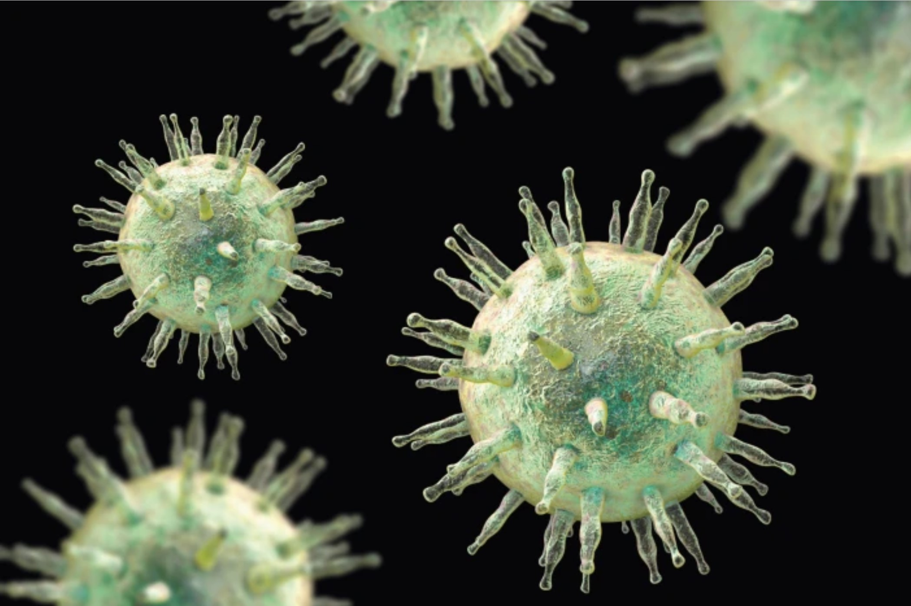
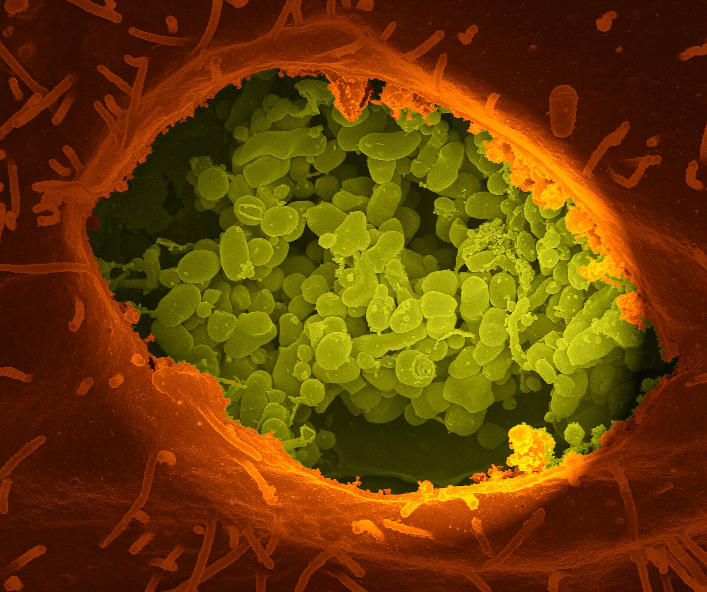

“The human immune system is amazing, with an impressive range of techniques to protect against invaders.”
I see this sentiment expressed frequently by everyone from doctors quoted in newspaper articles to online commentators in parenting groups. And I share it– I loved learning about the intricate processes our bodies deploy against invaders when I took graduate immunology.
However, the point that has struck me again and again as I complete my MS in Microbiology-Immunology is that pathogens (virues, bacteria, fungi, and parasites that cause disease) have a fierce and varied range of techniques to overcome our immune defenses, and even to turn our cells’ own defenses against us. Seeing the ingenuous lengths pathogens are capable of illustrates that it is often preferable to avoid getting infected in the first place.
There is hubris in exalting only the human immune system, without also recognizing the capacity of viruses and bacteria to wreak havoc in clever ways. In this post, I will cover 5 different ways that pathogens subvert our defenses.
1. Commandeering the cell’s own machinery
The year is 2063. An insect-like robot with a swinging gait and clamp-like feet marches along a beam in a space colony, transporting the large cargo suspended behind it.

Ooops– what I meant to say is that a microscopic motor protein in one of our cells moves a bag of proteins along the cytoskeleton, away from or towards the nucleus. This is not a metaphor; we actually have motor proteins that are moving complexes within our cells. The above gif is scientifically accurate, not a fantastical invention.
I used to think that cells were just sacks of liquid, with various items such as the mitochondria or nucleus floating haphazardly around inside. I couldn’t have been more wrong. Just as beams, drywall, and supporting columns are necessary to organize and support the architecture of a building, so too do our cells have an intricate organization arranged by various filaments and microtubules.
Tiny motor proteins that look like robots are used to transport items around. But just like the space colony mentioned above, these robots can be commandeered by enemy invaders. Unfortunately, the virus which plays a role in Alzheimer’s Disease is able to use these motor proteins for its own goals.
Alert! Alert! Herpes Simplex Virus-1 (HSV-1) has breached the cell! When HSV-1 invades a human cell, it commandeers our motor proteins to transport the viral capsids (packets containing the viral DNA) to the nucleus. The sooner the viral capsids arrive at the nucleus, the sooner the virus can begin replicating, printing copies of itself to invade the neighboring space colonies, err, I mean neighboring cells. HSV-1 has turned our cell’s own machinery against us to improve its speed and efficiency in infection.
HSV-1 is a virus responsible for causing fever blisters on the mouth. It can live latently in neurons, activating or reactivating after decades. A growing body of research is linking HSV-1 with a major role in Alzheimer’s Disease. The ability of HSV-1 to use human motor proteins to speed its path to the nucleus for replication is just one of the many devious tricks that different viruses and bacteria have developed.
2. Blocking signals from T cells
T cells are a keystone of the human immune system. T cells can rearrange their genes, allowing for the potential recognition of billions of different invaders. And yet they are outmatched by a single-celled organism (T. cruzi) carried in the feces of so-called “kissing bugs” (triatomine bugs). A kissing bug bites you in your sleep. In many cases, you may not even notice, and experience no symptoms in the coming weeks. T. cruzi is a species of trypanasome, a tiny one-celled parasite, and causes Chagas disease. They live in the feces of the bugs can enter the bite wound and travel through your bloodstream. They have a preference for making a home inside the muscles of your heart, the lining of your digestive tract, or the nervous system. T. cruzi can hang out patiently for 10-30 years, but are then ready to wreak havoc. Up to one third of patients experience heart problems caused by destruction of cardiac tissues. One in 10 experience neurological and digestive problems. Some die sudden deaths.

Why haven’t your T cells protected you? One of T. cruzi’s devious tricks is that it is able to block the key signal which coordinates the T cell response (a messenger known as IL-2). IL-2 is crucial for activating T cells. With its messaging blocked by these tiny parasites, T cells don’t activate and respond to the threat, and T. cruzi is able to survive in humans, later causing great destruction. While there is medication available that will work if addressed early, remember, most people have no symptoms initially. The best protection against T. cruzi is to avoid it in the first place, which typically requires access to a home that keeps out insects.
3. Making a home in B cells
In addition to T cells, the other type of adaptive immune cells that can rearrange their genes are B cells. B cells produce antibodies, small proteins that bind to a target, marking it for destruction by other immune cells. Through a process of hypermutation, B cells are able to create carefully custom-tuned antibodies to target any enemy they want. The flexibility and nearly infinite customizability of this defense are powerful.
Given the powers of B cells, you might expect that invaders would want to stay away from B cells. Yet Epstein-Barr Virus (EBV) and measles virus actively seek out B cells. EBV is able to set up a life-long home in memory B cells, hanging out for decades. While EBV is best known for causing mono, it can also cause multiple sclerosis and cancer. In multiple sclerosis, the immune system attacks the nervous system, damaging neurons and causing plaques in the brain. If the viral antigens present in EBV look similar to neurons, this could confuse the immune system and lead to autoimmune attack.

Another virus, measles, plays an amnesia trick on memory B cells, causing them to forget their memories of other invaders that the B cells had previously learned to recognize. This immune amnesia is why children who have been infected with measles are significantly more likely to die of other illnesses later, compared to children who have never had measles. The measles vaccine drastically reduces the risk of non-measles related deaths by letting the immune system retain the information it has learned.
4. Thriving in acid
T cells and B cells aren’t the only immune cells targeted by particular pathogens. Macrophage literally means “big eater”. These large cells are a useful component of the immune system, because they are ready to eat your enemies. Macrophages contain bags of acid to acidify and ingest invaders. They share the digested remnants of their foes with other immune cells to activate them and coordinate the immune response. Sounds fierce, right? And yet a number of bacteria have developed strategies to survive inside them.
“No! No! Don’t dump me in acid!” cries the bacteria C. burnetii insincerely, “Anything but that!” In fact, that is exactly what C. burnetii (the bacteria that causes Q fever) wants. It thrives in acid. Acidic environments are where it can replicate, making more and more copies of itself. C. burnetii prospers inside the the acidic pouches in macrophages.

C. burnetii is not the only type of bacteria that has figured out strategies for living inside the “Big Eaters” that are meant to protect us. Tuberculosis is a bacteria that spreads when infected people cough, talk, or even just breathe. Approximately 1.2 million people die each year of tuberculosis, almost double the number of people who die of HIV. Tuberculosis that is resistant to multiple antibiotics is an urgently growing problem. And unfortunately, our macrophages are unable to eliminate it. When macrophages take a big bite of an invader, this leads to the invader initially being inside a pouch called a phagosome, within the macrophage. Usually, the next step is for the phagosome (containing the invader) to merge with a pouch of acid (called the lysosome). However, tuberculosis is able to prevent that next step from happening. Tuberculosis loves to just kick back and relax within the phagosome. It can remain latent for years or even decades, but can reactivate if the immune system becomes suppressed.
5. When we put the brakes on translation, viruses cut the brake lines
Pathogens don’t just target immune cells, but also more general processes found in all our cells. A central action is the process by which DNA is transcribed into RNA, which is then translated into proteins. Proteins are the building blocks for all sorts of important materials within our cells, and proteins allow communication throughout the body. The process of producing protein from RNA is known as “translation”. Viruses love to take over our protein translation machinery for their own purposes.
In my molecular cell biology course, the professor recently taught about a method our cells have for halting protein translation when they have been infected by a virus (for my fellow immunology nerds, we were learning about PKR phosphorylation of eIF2α– but you don’t need to know any details of it for this blog post). It is a bit like our cells stepping on the brakes to stop protein translation.
That is encouraging that we can block those pesky viruses from producing proteins! Good job, human cells!
Then, on the following slide, the professor shared a paper that covers 31 different viruses that sabotage this safety mechanism (via 9 categories of actions) so that they can use the cells’ machinery to produce their own viral proteins regardless. Viruses have effectively cut the brake lines, so they can continue barreling along. And so it goes. Each time I learn about an intricate and ingenuous aspect of the human immune system, the following page seems to contain a clever way that pathogens circumvent or subvert it.
Viewing pathogens with appropriate respect gives us a path forward
There is hubris in focusing solely on the impressive coordination of the human immune system, without considering the methods that pathogens have developed for counterattacks. This information is not just an academic point; it has practical impact. Unthinking repetition of the soundbite “the immune system is amazing” can lull people into a false sense of confidence that disease prevention is unnecessary. While it can be discouraging to think about the methods bacteria and viruses have for causing harm and the surprising long-term consequences of some infections, the good news is that many infections are preventable.
Mosquito nets, houses that keep out insects, sewage systems, clean drinking water, air purifiers, N95s in public indoor spaces, and good ventilation are all effective at reducing risks of infection. In particular, research from the past few years has illustrated that cleaning up indoor air quality would likely stop transmission of numerous pathogens.
I still marvel at the intricacy of the human immune system, but alongside that marvel, I keep a commensurate respect for the serious deviousness of many pathogens.
I look forward to reading your responses. Create a free GitHub account to comment below.